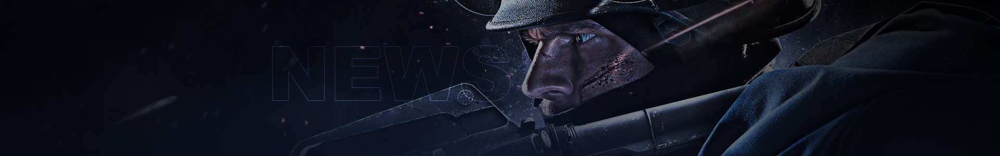

新闻中心
非遗纪录片丨用龙泉宝剑的锻造技艺打造两把CSGO匕首
作者：CSGO国服 时间：2022/09/05
我们把CS:GO游戏中的刀，搬到现实中来了？
CSGO国服五周年之际，我们找到了中国非遗文化的传承单位龙泉宝剑厂，希望通过龙泉宝剑传统的锻造方式打造CS:GO的爪子刀和骷髅匕首，并拍摄成《百炼人生》纪录片。
献给：每一位热爱CS:GO的玩家
点击链接或下方图片观看纪录片>>https://www.bilibili.com/video/BV1TW4y1b7wp?spm_id_from=333.999.0.0
【探寻竞技精神边界 找到与生活的交集】
众所周知，CS:GO是一款十分考验反应和意识的电竞游戏，玩家们需要持续不断的练习才能使技术更加精进，同时也会在不断的进步中锻炼出顽强不屈、百折不挠的心态。纯粹的CS:GO十年如一日，而随着时间的推移也许不是对手变弱了，而是玩家们逐渐成为了更强大的自己
这种“百炼成钢”的精神何尝又仅存在于游戏中呢？因此CSGO国服在5周年之际，以“探寻竞技精神与生活的边界”为出发点，想要在CS:GO与生活中发掘更多更有意义的事情。
【龙泉宝剑 x CS:GO 非遗文化的传承与新生】
中国传统锻造技术龙泉宝剑锻制技艺，其独具魅力的百炼钢需要锻剑大师千锤百炼才能成型，这与我们CS:GO“百炼成钢”的精神有着极为相似的内核。正巧一把好刀在CS:GO玩家心目中有着较高的地位，打造一把CS:GO中的刀也与本次行动的目的更加契合。
因此，我们找到了中国非遗文化的传承单位龙泉宝剑厂，希望通过龙泉宝剑传统的锻造方式打造CS:GO的爪子刀和骷髅匕首，并将过程进行记录。
这次合作是国服对于CS:GO玩家坚持和热爱的回应，也是非遗文化与竞技精神的交集。而拍摄的这支《百炼人生》纪录片象征着非遗文化在生活中的传承，和在游戏世界中的新生。
【跨界联动开启CSGO国服非遗计划】
本次国服与龙泉宝剑厂的锻刀跨界联动，也是CSGO国服非遗计划的第一步。五年来，国服陪伴玩家们共同成长，一同走过了许多难忘岁月，并以竞技精神激发了玩家对生活的无限热情。在国服五周年之际，CS:GO希望不断拓宽游戏与生活的边界，共同开启下一阶段的美好时光。